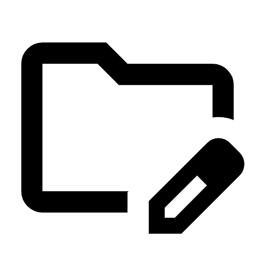

<!DOCTYPE html>
<html lang="nl">
<head>
    <meta charset="UTF-8">
    <meta name="viewport" content="width=device-width, initial-scale=1.0">
    <title>CommunityManager</title>
    <link rel="stylesheet" href="../styles/style2.css">
</head>
<body>
    <main>
        <aside class="leftContainer">
            <figure class="logoHeader">
                
                
            </figure>
            <div>
                <a class="mainLink" href="">Services</a>
                <div class="submenu hidden">
                    <a href="./services-1.html">Webontwikkeling en Maatwerk Applicaties</a> 
                    <a href="./services-2.html">Grafische Ontwerpdiensten</a>
                    <a href="./services-3.html">Community Manager Diensten</a>
                    <a href="./services-4.html">SEO en SEM Diensten</a>
                    <a href="./services-5.html">Database en Data-analyseservices</a>
                </div>
            </div>
            <div class="containerLink">
                <a class="mainLink" href="">Over ons</a>
                <div class="submenu hidden">

                    <a href="./Insight.html" >Insight</a> 
                    <a href="./mision.html" >  Missie</a>
                    <a href="./vissie.html" > Visie</a>     
                </div>
            </div>    
            <div class="containerLink">
                <a class="mainLink" href="">Meer opties</a>
                <div class="submenu hidden">

                    <a  href="./Privatepolicy.html"> Privacy-beleid</a> 
                    <a href="./cookies.html">   Cockie-beleid</a>
                    <a href="" class="hidden"> Voorwaarden</a>    
                </div>
            </div>    
        </aside>

        <hr/>

        <div class="clickIndicator"></div>
        <div class="menu-icon">
            <div class="bar"></div>
            <div class="bar"></div>
            <div class="bar"></div>
        </div>

        <aside class="rightContainer">
        
            <h2 class="title">SEO en SEM Diensten</h2>
           
            <p>We bieden complete SEO- en SEM-diensten om organisaties te helpen hun zichtbaarheid in zoekmachines 
                te verbeteren en verkeer van hoge kwaliteit aan te trekken.</p>

            <h2>1. SEO (Zoekmachine Optimalisatie)</h2>
            <ul>
                <li><strong>Zoekwoordonderzoek:</strong>Het identificeren van de meest relevante en effectieve zoekwoorden voor uw niche.</li>
                <li><strong>On-Page Optimization:</strong>Verbeteringen aan de inhoud en structuur van de website, inclusief titels, metabeschrijvingen, tags en laadsnelheid.</li>
                <li><strong>Off-Page Optimalisatie:</strong>Strategieën voor linkbuilding en promotie van sociale media om de autoriteit van de website te vergroten.</li>
                <li><strong>Technische SEO:</strong>Oplossingen voor technische websiteproblemen die de prestaties van de zoekmachine kunnen beïnvloeden.</li>
            </ul>
            <figure>
            </figure>

            <h2>2. SEM (Zoekmachine Marketing):</h2>  
            <ul>
                <li><strong>Pay Per Click (PPC)-advertenties:</strong>het beheren van advertentiecampagnes op platforms zoals Google Ads en Bing Ads om het rendement op de investering te maximaliseren.</li>
                <li><strong>Zoekwoordonderzoek en -selectie:</strong>Het kiezen van de meest effectieve zoekwoorden voor uw betaalde advertenties.</li>
                <li><strong>Advertenties maken en optimaliseren:</strong>Het ontwikkelen van boeiende en relevante advertenties die de aandacht van gebruikers trekken.</li>
                <li><strong>Campagne-analyse en -rapportage:</strong>Continue monitoring en analyse van de prestaties van advertentiecampagnes met gedetailleerde rapporten.</li>
            </ul>
            <figure>
            </figure>

            <h2>3. Analyse en rapporten</h2>
            <ul>
                <li><strong>Prestatiebewaking:</strong>Houd belangrijke statistieken bij, zoals verkeer, conversieratio en rendement op investering (ROI).</li>
                <li><strong>Periodieke rapporten:</strong>Gedetailleerde rapportage om de effectiviteit van SEO- en SEM-strategieën te evalueren.</li>
                <li><strong>Aanpassingen en continue optimalisatie:</strong>Bijsturen op basis van data-analyse om de prestaties van de geïmplementeerde strategieën continu te verbeteren.</li>
            </ul>
            <figure>
            </figure>
    </main>

    <script src="../script/menu2.js"></script>
    <script src="../script/index2.js"></script>
</body>
</html>